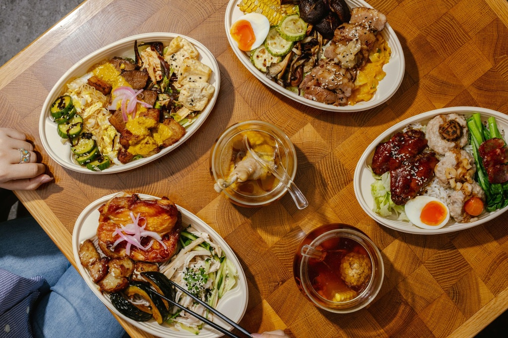

Western Food in HK
Missing home food? Hong Kong has its own western cuisine — here’s what to expect and what to order.
Week three hits and you want a burger. Hong Kong has western food — but it’s its own thing, called “soy sauce western,” evolving since the 1950s.
Expect
- Borscht made with tomato, not beetroot
- Baked pork chop rice — pork chop, tomato sauce, rice, baked under cheese. The unofficial student comfort dish. HK$60–75.
- Steak arriving sizzling with butter on top, with instant noodles on the side
- Sandwiches with the crusts cut off
Find it at any cha chaan teng with a big glowing sign, or the western cafes around Wan Chai and Tsim Sha Tsui. Save Central’s “real” European places for when your parents visit.
Don’t fight it. The baked pork chop rice beats the thing you were homesick for anyway.
